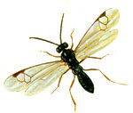
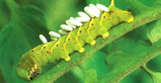

Many years ago, at a time when my wife was 8-months pregnant, we took in a movie but were not very particular in our choice. Two hours later, after seeing the original Alien , she said, "That was a big mistake. Where was Mary Poppins when we needed her?"
This visceral reaction to the idea of foreign "things" living inside other animals, including ourselves, must come from a long human history of living with the likes of tapeworms, pinworms and scabies. Or, taking an analytical view of the natural world, it could be described as one big transfer of nutrients from one organism to another. Within that simple model, unlimited ways exist in which the materials of one organism can be borrowed or hijacked by another. The braconid mini-wasps fit the profile; they are insects that fulfill their life cycle by inhabiting the bodies of other creatures.
The braconid family is in the Order Hymenoptera, which includes other bees and wasps, but all 1,700 North American species in this family are stingless, and so small you have to pay close attention to see them. They can be almost invisible, at 2 to 3 millimeters long, or veritable giants at 15 millimeters (about 5/8 inch). Antennae will usually be noticeable and a visible ovipositor (not a stinger) is common to many species. Most will be black or brown, but a few have some color. Braconids are short and stocky-the abdomen is about the same length as the head and thorax combined. Unlike other wasps, braconids do not have skinny "waists." They can be confused with small flies.
Different braconids are parasitic on army worms, eastern tent caterpillars, corn borers, cotton bollworms, alfalfa weevils, wheat-stem sawflies and Douglas-fir bark beetles, just to name a few. In the garden and orchard, this beneficial parasitism occurs on aphids, coddling moths, tomato hornworms, garden webworms and on many different caterpillars, beetles and flies.
The parasitism occurs in a variety of forms. Some adult braconids will lay eggs in or on the host. The resulting larva consume the host and then emerge to become adults elsewhere. (The white bumps on the hornworm in the photo above look like insect eggs, but they are actually cocoons from which adult mini-wasps will hatch.) Other braconids, like the aphid parasites, lay only one egg per aphid nymph, and the invader completes its cycle and emerges as an adult. Diversity is a strength of ecosystems, so we shouldn't be surprised that some beautiful and harmless (to us!) species, like the larva of swallowtail butterflies and sphinx moths, also are hosts for braconids.
he genus Aphidius is of particular interest to gardeners, especially greenhouse gardeners. These wasp adults are only about two to three times the size of an aphid. They lay a single egg in each aphid nymph, which kills the aphid; then they emerge as an adult. Aphid colonies often show different colors. Live aphids are off-white or light green in color, while dark to light brown bodies are likely the shells of dead aphids from which parasites have emerged. A hand lens comes in handy here. The presence of dead aphids means that many of the live nymphs are likely parasitized as well, but can still move. The braconid "alien occupation" of the host for these species can take as little as 7 to 10 days. Females of different species of wasps can lay from 50 to 400 eggs each, so their effect can be substantial. Many braconid species are sold commercially to protect different greenhouse crops. These beneficial mini-wasps feed on nectar from flowers. To attract them to your garden, grow plants with tiny flowers including dill, fennel and mints.
- John Stuart
Mother Earth News
|
 |
 |
|